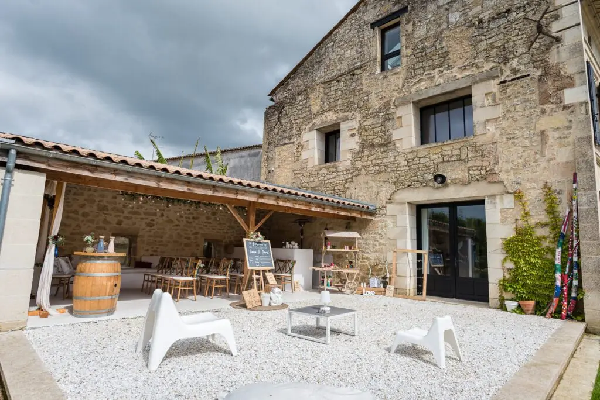
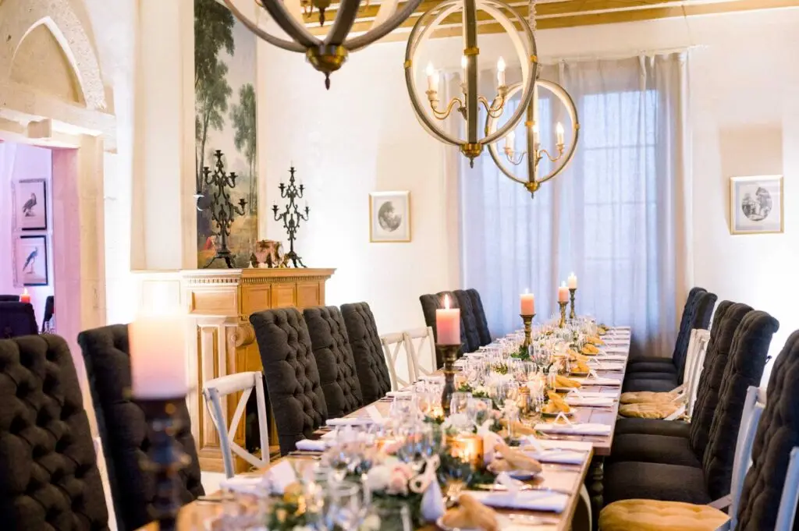

An intimate wedding
A small, intimate wedding in the Bordeaux region is the option more and more couples are choosing. Why?
The couple decide to marry according to their own wishes rather than out of cultural obligation. This gives meaning to your union and is a chance to refocus on what matters most to you.
And I work hard to give meaning to the wedding, so you can create a wedding that truly reflects YOU.
Think about yourselves and your wishes when choosing the people who matter most to you. You'll put together your guest list simply and warmly. And where would you hold your wedding?
A family garden or a house rented for the occasion is the ideal space, because you'll be happy and relaxed, and so will your loved ones.
Write down your priorities; this will also help you put your budget in the right place. To delight your guests and experience a unique wedding, think of a bespoke ceremony!



What will matter most at your small wedding is enjoying the people you love. Make the most of it with activities that bring your loved ones together and create a really festive atmosphere.
How about a boat trip on the Arcachon Bay? An activity where you make your own cocktails, a cooking class, or creating your own signature perfume? Your day will be more than a wedding: it will be the event of a lifetime.

I've had the chance to organise small weddings, and the activities are more fun, the dinner even more refined and the venues unique.
If you'd love these magical moments but are short of time or even creativity, I offer an all-inclusive package to support you through the preparations in Bordeaux. I'll whisk you and your guests away to a surprise destination and organise these moments so you're in your own unique wedding bubble!
Lovely Day Event offers several services
Wedding planning
I step in at every stage of your preparations and guide you through your choices, bringing ideas and suggestions so that your wedding looks like no one but you.
Wedding design
Creative and passionate, I am a certified Wedding Designer and I create a scenographic atmosphere that matches the theme of your wedding.
On-the-day coordination
I will be the conductor of your day, managing the suppliers, the set-up of your decor and the smooth running of this beautiful day.